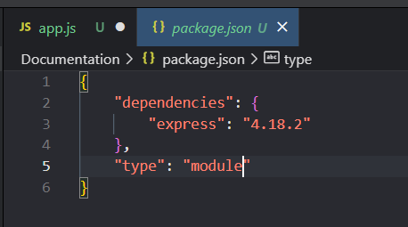
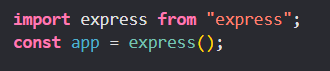
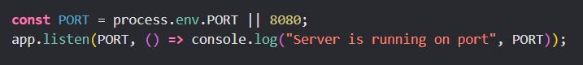
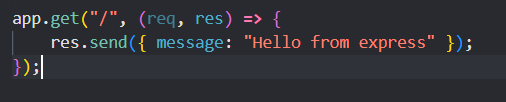

Scope determines the accessibility or visibility of variables to JavaScript.
a) Global scope
b) Local scope
Variables declared outside a function are in the global scope. Global variables can be accessed and changed in any other scope.
Variables defined within a function are in local scope and are not accessible in other functions. Each function,
when invoked, creates a new scope, therefore variables with the same name can be used in different functions.
Use let when you know that the value of a variable will change.
Use const for every other variable.
Do not use var.
It is a JSON file that lives in the root directory of your project. It holds important information about the project. It contains human-readable metadata about the project as well as functional metadata like the package version number and a list of dependencies required by the application.
Assume we already installed express and set up package.json. Then we go in our app.js and import express. After that we create a new instance of the Express framework.
Finaly we create a method that starts the server and listens for incoming requests on the specified port.
And in order to actually see something we can make a simple get request which will send a message as a responce.
